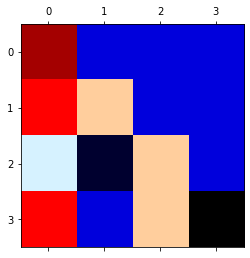
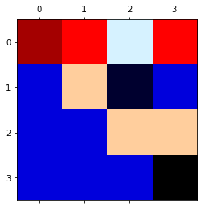
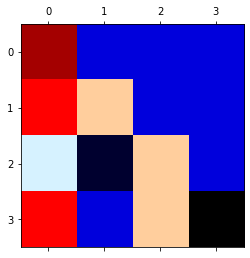
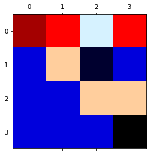

Fatoração de Cholesky
Contents
12. Fatoração de Cholesky#
12.1. Matrizes positivas definidas#
Definição (baseada em autovalores) uma matriz \({\bf A}\) é positiva definida se todos os seus autovalores são positivos (\(\lambda > 0\)).
Entretanto, não é conveniente computar todos os autovalores de uma matriz para saber se ela é ou não positiva definida. Há meios mais rápidos de fazer este teste como o da “energia”.
Definição (baseada em energia): uma matriz \({\bf A}\) é positiva definida se \({\bf x}^T {\bf A} {\bf x} > 0\) para todo vetor não-nulo \({\bf x}\).
Para a ordem \(n=2\), temos os eguinte resultado:
Em muitas aplicações, este número é a “energia” no sistema.
O código abaixo mostra que esta multiplicação produz uma forma quadrática para a ordem \(n\).
import sympy as sp
sp.init_printing(use_unicode=True)
x1,x2,x3 = sp.symbols('x1,x2,x3')
# ordem do sistema
n = 3
x = sp.zeros(1,n)
A = sp.zeros(n,n)
aux = 0*A;
for i in range(n):
x[i] = sp.symbols('x' + str(i+1))
for j in range(n):
if i == j: # diagonal
A[i,i] = sp.symbols('a' + str(i+1) + str(i+1))
elif j > i: # triang. superior
aux[i,j] = sp.symbols('a' + str(i+1) + str(j+1))
# matriz
A = A + aux.T + aux # compõe D + L + U
A = sp.Matrix(A)
# vetor
x = sp.Matrix(x)
x = x.T
# matriz positiva definida
c = (x.T)*A*x
# expressãoo quadrática
sp.expand(c[0])
Ainda falando sobre o caso \(n=2\), observamos que os autovalores da matriz \({\bf A}\) são positivos se, e somente se
Na verdade, esta regra vale para todos os pivôs. Estes dois últimos valores são os pivôs de uma matriz simétrica 2x2 (verifique a eliminação de Gauss quando aplicada à segunda equação).
A teoria da Álgebra Linear permite-nos elencar as seguintes declarações, todas equivalentes, acerca da determinação de uma matriz positiva definida \({\bf A}\):
Todos os seus \(n\) pivôs são positivos.
Todos os determinantes menores superiores esquerdos (ou principais) são positivos (veja Critério de Sylvester).
Todos os seus \(n\) autovalores são positivos.
\({\bf x}^T {\bf A}{\bf x} > 0\) para todo vetor não-nulo \({\bf x}\). (Definição baseada na “energia”).
\({\bf A} = {\bf G}{\bf G}^T\) para uma matriz \({\bf G}\) com colunas independentes.
12.1.1. Interpretação geométrica#
Matrizes positivas definidas realizam transformações “limitadas” no sentido de “semiplano” do vetor transformado. Por exemplo, se tomarmos um vetor \({\bf x} \in \mathbb{R}^2\) não-nulo e usarmos o fato de que para uma matriz positiva definida, a inequação \({\bf x}^T{\bf A}{\bf x} > 0\) deve valer, ao chamarmos \({\bf y} = {\bf A}{\bf x}\), a expressão anterior é o produto interno entre \({\bf x}\) e \({\bf y}\), a saber \({\bf x}^T{\bf y}\). Se o produto interno é positivo, já sabemos que os vetores não são ortogonais. Agora, para verificar que eles realmente pertencem a um mesmo semiplano, usaremos a seguinte expressão para o ângulo entre dois vetores:
Uma vez que a norma (comprimento) de um vetor é sempre um número real positivo, o produto \(||{\bf x}||{\bf y}||\) no denominador acima é um número real positivo. Se \({\bf x}^T {\bf y}\) > 0, então \(\cos(\theta) > 0\), e o efeito geométrico da transformação é
ou seja, o ângulo entre \({\bf x}\) e \({\bf y}\) é sempre menor do que 90 graus (ou \(\pi/2\) radianos).
12.2. Método da Fatoração de Cholesky#
Trata-se de um algoritmo para resolução de sistemas lineares \({\bf A}{\bf x} = {\bf b}\) através da decomposição da matriz \({\bf A}\) em dois fatores simétricos, \({\bf G}\) e \({\bf G}^T\). O método é aplicável apenas a sistemas cuja matriz associada é simétrica e positiva definida.
12.2.1. Passos#
Primeiramente, é necessário checar se a matriz associada ao sistema cumpre os requisitos da fatoração de Cholesky:
Simetria: a matriz é simétrica quando sua transposta é igual a ela própria: $\(A=A^T\)$
Definição positiva: averiguamos se o Critério de Sylvester é satisfeito. Ou seja, verificamos se todos os determinantes menores principais da matriz, constituídos pelas \(k\) primeiras linhas e \(k\) primeiras colunas dela, são maiores do que zero:
Concluídas as verificações anteriores, decompomos a matriz \({\bf A}_{nxn}\) em uma triangular inferior \({\bf A}\) e sua transposta \({\bf A}^T\), a qual é triangular superior. O processo é descrito abaixo:
Para uma matriz \(A_{4x4}\) obtém-se o fator de Cholesky da seguinte forma:
Este sistema pode ser resolvido comparando cada coluna de \({\bf A}\) com a multiplicação de \({\bf G}\) por cada coluna de \({\bf G}^T\) de maneira que \({\bf x}_{kxn} = {\bf G}{\bf G}^T_{kxn}, \, k = 1,2,\ldots, n\). Através dessa sequência são obtidos sistemas simples, em que cada coluna \(k\) terá os valores de \(g_{kn}\)e, após a atualização do iterador \(k \rightarrow k + 1\), não será necessário resolver novamente as \(k − 1\) linhas do próximo sistema gerado.
De posse dos valores que geram as matrizes triangulares, é possível seguir para a última etapa, a qual consiste em obter o vetor \({\bf x}\) fazendo
Aqui, usamos o mesmo processo utilizado na Fatoração LU. Primeiramente, obtemos o vetor \({\bf y}\) após a resolução do sistema \({\bf G}{\bf y} = {\bf b}\). Enfim, obtemos \({\bf x}\) através da relação \({\bf G}^T {\bf x} = {\bf y}\). Fazendo com que, assim, seja obtido o vetor \({\bf x}\) que resolve o sistema linear proposto no inicio.
12.3. Algoritmo para a fatoração de Cholesky#
O código abaixo é uma implementação de um algoritmo para a fatoração de Cholesky por computação simbólica.
# implementação de algoritmo simbólico
# para a decomposição de Cholesky
B = A[:,:] # faz cópia da matriz A
for k in range(0,n):
for i in range(0,k):
s = 0.
for j in range(0,i):
s += B[i,j]*B[k,j]
B[k,i] = (B[k,i] - s)/B[i,i]
s = 0.
for j in range(0,k):
s += s + B[k,j]*B[k,j]
B[k,k] = sp.sqrt(B[k,k] - s)
# saída
B

12.3.1. Tarefa#
Converta o código simbólico acima para uma versão numérica (ou implemente a sua própria versão) e aplique-o na matriz abaixo para encontrar o fator de Cholesky:
12.4. Cálculo do fator de Cholesky com Python#
import matplotlib.pyplot as plt
from scipy import array, linalg, dot, zeros
# matriz
A = array([[16, -4, 12, -4],
[-4, 2, -1, 1],
[12, -1, 14, -2],
[-4, 1, -2, 83]])
# fator de Cholesky do Scipy
L = linalg.cholesky(A, lower=True, overwrite_a=False, check_finite=True)
# fator de Cholesky implementado
n = A.shape[0]
G = zeros(A.shape, dtype=float)
print('Matriz A = \n', A)
print('Matriz L = \n', L)
print('Matriz L^T = \n', L.T)
# prova real por produto interno
A2 = dot(L, L.T)
print('Matriz LL^T = \n', A2)
# prova real usando norma de Frobenius da diferenca de matrizes
print('Norma || A - LL^T || = ', linalg.norm(A-A2))
plt.matshow(A,cmap=plt.cm.flag);
plt.matshow(L,cmap=plt.cm.flag);
plt.matshow(L.T,cmap=plt.cm.flag);
Matriz A =
[[16 -4 12 -4]
[-4 2 -1 1]
[12 -1 14 -2]
[-4 1 -2 83]]
Matriz L =
[[ 4. 0. 0. 0.]
[-1. 1. 0. 0.]
[ 3. 2. 1. 0.]
[-1. 0. 1. 9.]]
Matriz L^T =
[[ 4. -1. 3. -1.]
[ 0. 1. 2. 0.]
[ 0. 0. 1. 1.]
[ 0. 0. 0. 9.]]
Matriz LL^T =
[[16. -4. 12. -4.]
[-4. 2. -1. 1.]
[12. -1. 14. -2.]
[-4. 1. -2. 83.]]
Norma || A - LL^T || = 0.0
 


